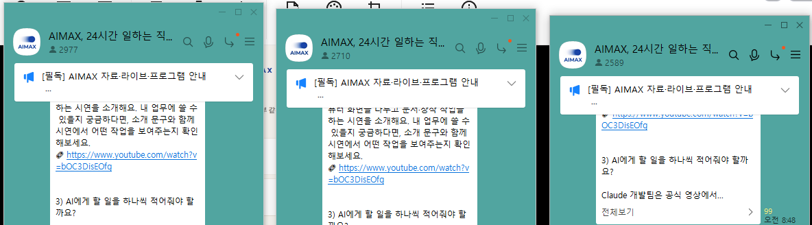

무료자료는 만들었는데
판매까지 이어지지 않나요?
끊긴 흐름을
연결하세요
자료 제작부터 신청·발송·후속 제안까지.
자동 퍼널의 뼈대를 먼저 그리는 책입니다.
도구를 켜기 전에
빈칸부터 찾습니다
어디서 끊겼는지 보이게
퍼널을 일곱 칸으로 나누면 지금 가진 것과 없는 것을 구분할 수 있습니다.
도구가 바뀌어도
흐름은 남도록
원문 ‘절대 안 바뀌는 자동 퍼널 뼈대’ 요약
다 자동화하려다
시작을 미루지 않게
제작부터
자료·상세페이지·배포글·후속 문구를 준비합니다.
실행 연결
계정과 발송 도구를 연결하고 작동을 확인합니다.
처음에는 반자동으로
자료와 받을 그릇을 함께 준비합니다. 손으로 한 번 운영한 뒤 자동으로 돌릴 구간을 정합니다.
내 번호로
한 건부터
테스트 신청
신청 폼을 채운 뒤 내 정보가 들어왔는지 확인합니다. 이어서 무료자료가 도착했는지 봅니다.
폼에 들어왔나요?
신청 정보가 저장되는지 직접 확인합니다.
자료가 도착했나요?
발송 도구의 성공 표시와 실제 수신을 함께 봅니다.
멈추면 알 수 있나요?
완전자동으로 돌리는 단계에서는 감시와 알림도 함께 붙입니다.
후속 제안도
흐름을 만듭니다
책의 예시 순서를 내 상품에 맞춰 바꿉니다.
발송 전 수신 동의와 채널 조건을 확인하는 과정도 다룹니다.
사람을 모으고
소식을 전해온 곳.
(주)메이크프렌즈
연간 매출
출처: (주)메이크프렌즈 월별 매출 원장.
각 연도 1~12월 합계입니다.
카카오톡 오픈채팅방 세 곳의
참여 인원 표시를 확인할 수 있습니다.

AIMAX 오픈채팅 · 2026.09.10 캡처 기준.
방별 참여수 합계 8,276명. 중복 참여를 포함합니다.

메이크패밀리 네이버 카페 westudyssat 회원수.
2026.09.10 캡처 기준.
내 사업에 맞는
퍼널 한 장
흐름도와 무료자료 초안
지금 가진 재료를 정리하고 무료자료 목차·배포 글을 만듭니다.
폼·발송·후속 안내 초안
누가 무엇을 받는지 정하고 내 도구를 연결할 질문을 준비합니다.
읽기 전에
궁금한 것들
클로드코드가 24시간 만에 저지른 일
결제한 이메일로 PDF와
브레인 파일을 받을 수 있습니다.
같은 이메일로 라운지에 로그인하면
책 본문도 읽을 수 있어요.
읽기 전 확인해주세요
본문을 바탕으로 만든 설명 화면은 이해를 돕는 예시입니다. 개인의 실행 환경과 적용 방식에 따라 결과는 달라집니다.
디지털 파일 상품이라 결제 후 환불되지 않아요.